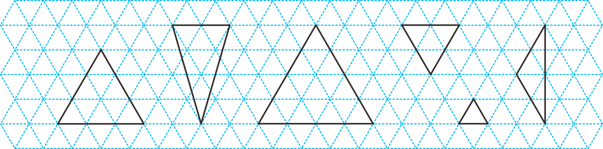

- 물음 1
- 물음 2
- 물음 3
-
삼각형을 어떻게 분류해 보세요.
가나다라마바예세 변의 길이가 같은
삼각형길이가 다른 변이 있는
삼각형가, 다, 라, 마나, 바 -
-
삼각형을 어떻게 분류했는지 말해 보세요.
가나다라마바예세 변의 길이가 같은 삼각형 가, 다, 라, 마와 길이가 다른 변이 있는 삼각형 나, 바로 분류했습니다. -
삼각형을 어떻게 분류했는지 말해 보세요.
가나다라마바예둔각이 있는 삼각형 바와 둔각이 없는 삼각형 가, 나, 다, 라, 마로 분류했습니다.
-
-
세 변의 길이가 같은 삼각형을 무엇이라고 부르면 좋을지 이야기해 보세요.
예두 변의 길이가 같은 삼각형을 이등변삼각형이라고 했으니까 세 변의 길이가 같은 삼각형을 삼등변삼각형이라고 부르면 좋겠습니다.예세 쌍둥이를 삼쌍둥이라고 부르니까 세 변의 길이가 같은 삼각형은 삼쌍둥이삼각형이라고 부르면 좋겠습니다.예네 변의 길이가 모두 같은 사각형을 정사각형이라고 했으니까 삼각형도 세 변의 길이가 모두 같으면 정삼각형이라고 부르면 좋겠습니다.